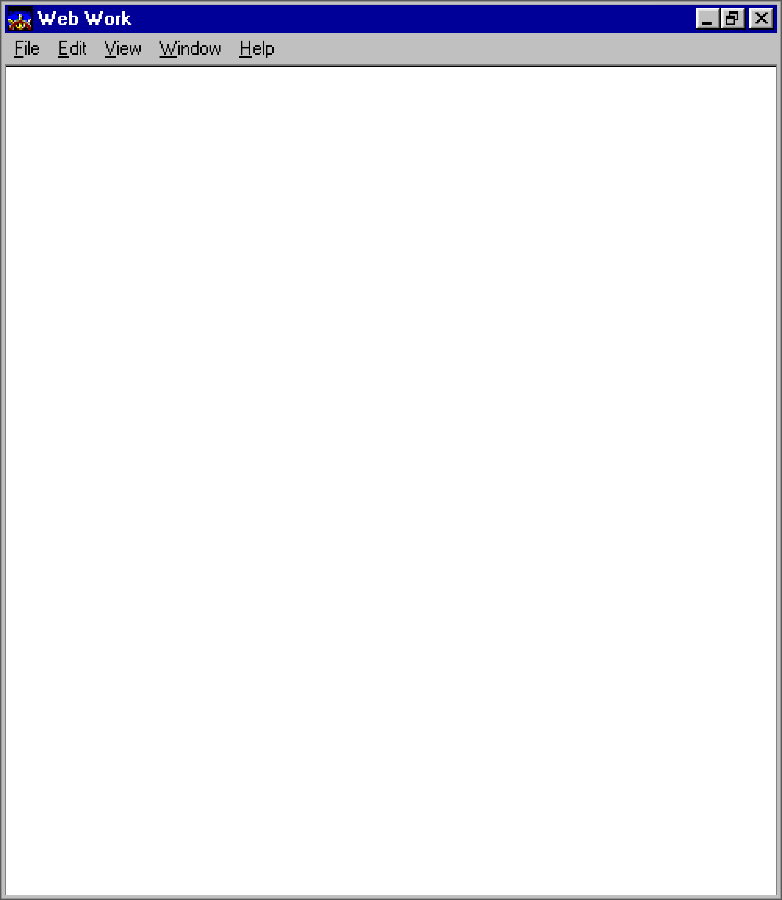
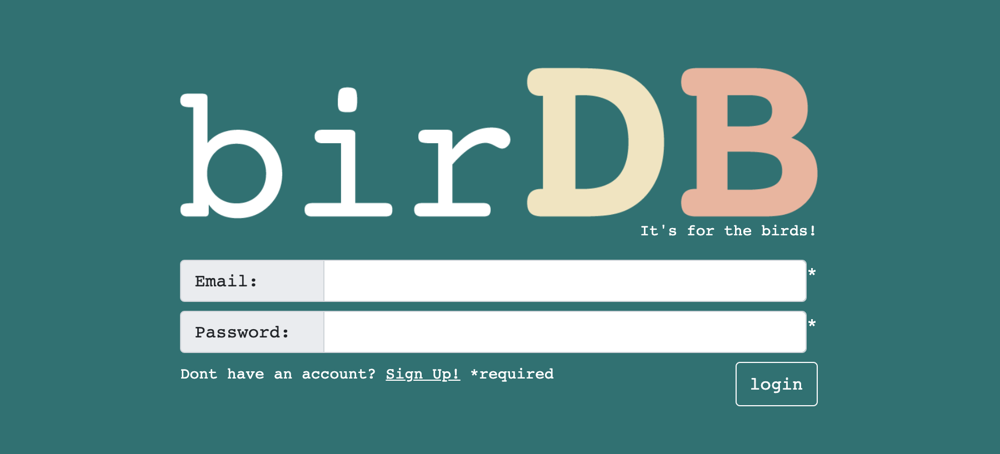

"birDB" (a play on "bird database") is a light social media site based around birdwatching. The
bulk of the site functions as a bird journal, allowing users to upload information about
their sightings along with a photo. From there, the user can view sightings from other birdwatchers,
comment on their posts, search for similar sightings, and converse with other users in a standalone
chat window.
We utilized and HEAVILY modified a template due to the time constraint, but other than that, the site was
built entirely from scratch in one week by a team of four. My role was to design
a simple logo and then tackle a major part of the functionality. I opted to take on the
challenge of creating the page that passes all of the bird information to our database along with
passing a photo to an external image hosting service. Said functionality then retrieves a secure
image URL from the image API and displays it along with the post.
Live Link | GitHub Source | Back